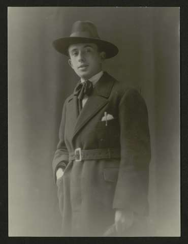

Ramón María Valle Peña (Villanueva de Arosa, 28 de octubre de 1866-Santiago de Compostela, 5 de enero de 1936), también conocido como Ramón del Valle-Inclán o Ramón María del Valle-Inclán, fue un dramaturgo, poeta y novelista español, que formó parte de la corriente literaria denominada modernismo. Se le considera uno de los autores clave de la literatura española del siglo xx. Novelista, poeta y autor dramático español, además de cuentista, ensayista y periodista. Destacó en todos los géneros que cultivó y fue un modernista de primera hora que satirizó amargamente la sociedad española de su época. Estudió Derecho en Santiago de Compostela, pero interrumpió sus estudios para viajar a México, donde trabajó de periodista en El Correo Español y El Universal. A su regreso a Madrid llevó una vida literaria, adoptando una imagen que parece encarnar algunos de sus personajes. Actor de sí mismo, profesó un auténtico culto a la literatura, por la que sacrificó todo, llevando una vida bohemia de la que corrieron muchas anécdotas. Perdió un brazo durante una pelea. En 1916 visitó el frente francés de la I Guerra Mundial, y en 1922 volvió a viajar a México.
Respecto a su nombre público y literario, Ramón del Valle-Inclán es el que aparece en la mayoría de las publicaciones de sus obras, así como en los nombramientos y ceses de los cargos administrativos institucionales que tuvo en su vida. El nombre «Ramón José Simón Valle Peña» solo aparece en los documentos de la partida de bautismo y del acta de matrimonio. Como Ramón del Valle de la Peña solo firma en las primeras colaboraciones que realiza en su tiempo de estudiante universitario en Santiago de Compostela para Café con gotas. Semanario satírico ilustrado. Con el nombre de Ramón María del Valle-Inclán se le encuentra en algunas ediciones de ciertas obras de su época modernista, así como en un texto igualmente de su época modernista, que responde a una particular «autobiografía». No solo él mismo toma a veces este nombre durante esta época literaria, sino que también Rubén Darío igualmente así le declama en la «Balada laudatoria que envía al Autor el Alto Poeta Rubén» (1912). Por otra parte, tanto en la firma ológrafa que aparece en todos sus textos manuscritos, como en el membrete del papel timbrado que utiliza, solo indica Valle-Inclán, a secas.
Luís Amado Carballo (Pontevedra, 1901 - Pontecedra, 1927) fue un escritor español en lengua gallega. Cursó estudios de Filosofía y Letras en Santiago de Compostela (La Coruña), pero sin llegar a finalizarlos. En 1920 se trasladó a Madrid con la idea de dedicarse al periodismo, cosa que sólo consigue parcialmente. Lleva una vida bohemia y asiste a algunas tertulias literarias. De vuelta a Pontevedra, en 1922 fundó junto con Xoán Vidal Martínez la revista Alborada. En 1924, después de ejercer de maestro con carácter interino, ingresó como redactor de La Concordia en Vigo (Pontevedra) y después en El pueblo gallego. Murió en Pontevedra a los veintisiete años, a consecuencia de la tuberculosis. En 1982 se le dedicó el Día de las Letras Gallegas.
Derechos de Autor
Luis Ramallo Vidal
Última actualización: 22/10/2022. 19:18